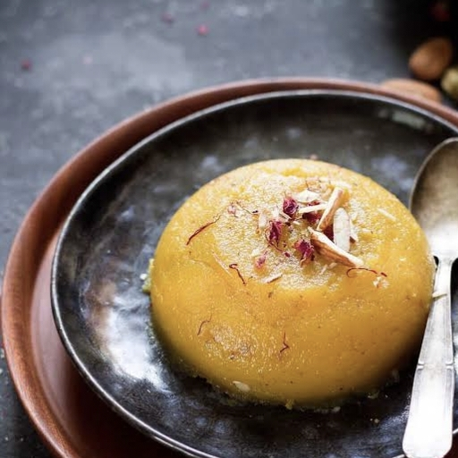

Telugu Ruchulu
తెలుగు రుచులు
BaadamHalwa/
బాదంహల్వా
Home Page
Click to change the language
తెలుగు కోసం క్లిక్ చేయండి
Ingredients:
1 cup almonds (badam)
¾ cup sugar (adjust to taste)
½ cup milk
¼ cup ghee (clarified butter)
¼ tsp cardamom powder
8-10 saffron strands (optional)
10-12 chopped almonds (for garnish)

Instructions:
Soak & Blend Almonds –
Soak almonds in hot water for 1 hour, peel the skin, and grind them into a smooth paste using milk
Cook the Paste –
Heat ghee in a pan, add the almond paste, and cook on low heat while stirring continuously.
Add Sugar & Flavoring –
Once the paste thickens slightly, add sugar, saffron strands, and cardamom powder. Mix well.
Cook Until Ghee Separates -
Continue stirring until the halwa thickens and the ghee starts to release from the sides
Garnish & Serve –
Add chopped almonds on top and serve warm.
Tip
కావలసినవిః
కప్పు బాదం (బాదం)
¾ కప్ చక్కెర (రుచికి సర్దుబాటు చేయండి)
½ కప్పు పాలు
¼ కప్పు నెయ్యి (స్పష్టమైన వెన్న)
¼ స్పూన్ యాలకుల పొడి
8-10 కుంకుమపువ్వు
10-12 తరిగిన బాదంపప్పులు
బాదంపప్పులను నానబెట్టి బ్లెండ్ చేయండి -
బాదంపప్పును వేడి నీటిలో 1 గంట నానబెట్టి, చర్మాన్ని తీసి, పాలను ఉపయోగించి మెత్తని పేస్ట్గా రుబ్బుకోవాలి.
పేస్ట్ ఉడికించాలి -
ఒక పాన్ లో నెయ్యి వేడి, బాదం పేస్ట్ జోడించండి, మరియు నిరంతరంగా గందరగోళాన్ని తక్కువ వేడి మీద ఉడికించాలి
షుగర్ & ఫ్లేవరింగ్ జోడించండి -
పేస్ట్ కొద్దిగా చిక్కగా మారిన తర్వాత, పంచదార, కుంకుమపువ్వు తంతువులు మరియు యాలకుల పొడిని జోడించండి. బాగా కలపాలి.
నెయ్యి విడిపోయే వరకు ఉడికించాలి -
హల్వా చిక్కబడే వరకు మరియు నెయ్యి పక్కల నుండి విడుదలయ్యే వరకు కదిలించు
గార్నిష్ & సర్వ్ –
పైన తరిగిన బాదంపప్పు వేసి వెచ్చగా సర్వ్ చేయాలి.
చిట్కా